|
|
| shelled snails text index | photo index |
| Phylum Mollusca > Class Gastropoda > Family Ellobiidae |
| Belongkeng
snail Ellobium sp. Family Ellobiidae updated Jul 2020 Where seen? This large snail is sometimes seen in our back mangroves. Sometimes, their empty shells are washed ashore on beaches near mangroves. It breathes air (instead of through gills like most other marine snails). Elsewhere, they are also found in Nipah palm groves. Features: 4-9cm. Shell thick and oval or elongated, plain brown. White at the shell opening. The animal is large with a fleshy pale body and short tentacles, some with pretty white patterns. |
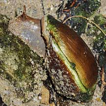 Pasir Ris, Aug 09 |
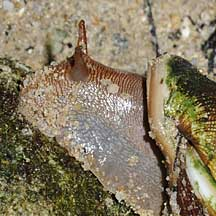 |
|
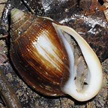 |
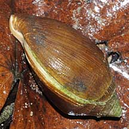 |
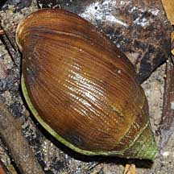 |
| What does it eat? It grazes on
algae growing on mangrove trees and on the ground. Human uses: Traditionally collected as food by Indonesian coastal dwellers. Status and threats: The Mangrove land snail (Ellobium scheepmakeri) is listed as 'Critically Endangered' on the list of threatened animals of Singapore due to habitat loss. |
|
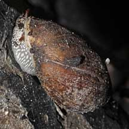 Pulau Semakau, Feb 09 |
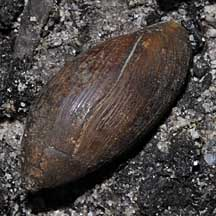 |
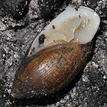 |
| Belongkeng snails on Singapore shores |
On wildsingapore
flickr
|
| Other sightings on Singapore shores |
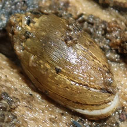 Pasir Ris Park, Dec 25 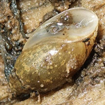 Photo shared by Rui Quan Oh on facebook. |
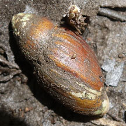 Pasir Ris Park, Dec 25 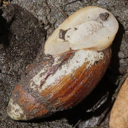 Photo shared by Rui Quan Oh on facebook. |
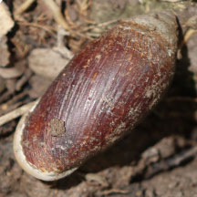 Pandan mangroves, Dec 25 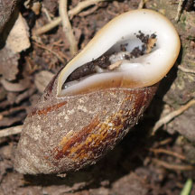 Photo shared by Rui Quan Oh on facebook. |
Links
|